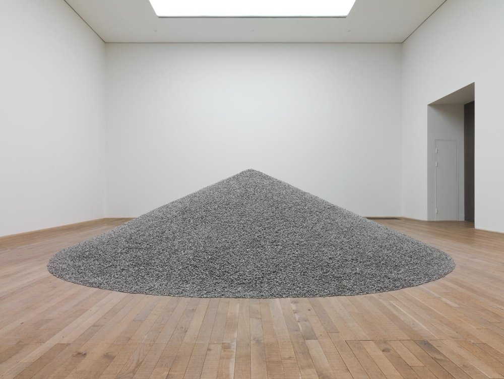

Sunflower Seeds
Ai Weiwei · 2010 · Porcelain · Overall display dimensions variable · Tate, London
In copyright. Look and learn: shown for study, not for download.
Each seed is porcelain, shaped and painted by hand in Jingdezhen, the Chinese city that made imperial porcelain for more than a thousand years. More than 1,600 workers spent two and a half years on the 100 million seeds that covered the floor of Tate Modern's Turbine Hall in October 2010. Visitors were invited to walk on them, but after the first days the dust was judged a health risk and the field was roped off. In 2012 Tate bought about 8 million seeds, some ten tonnes, which it has shown as a cone five metres across.